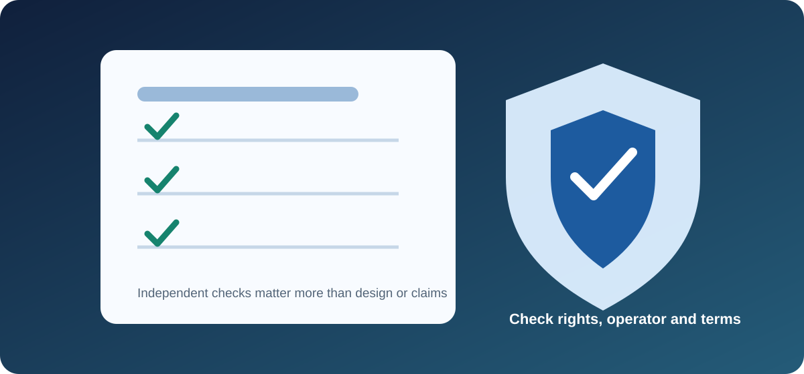

Is IPTV Legal in the UK? Rights, Licensing and Viewer Checks
Author: IPTV Guide UK · Last updated: 2026-11-19
Short answer: IPTV (Internet Protocol Television) is a technology for delivering television over internet networks. The technology itself is not a guarantee that a particular service or stream is lawful. The key issue is whether the service has the necessary rights to make the content available to viewers in the UK.

IPTV technology versus content rights
Legitimate broadcasters and subscription services use internet delivery. A service offering channels or films must have the appropriate permissions for the content and territories it distributes. A professional website, low price, large channel list or functioning app does not by itself prove those rights exist.
Questions to ask a provider
- Who is the legal business operating the service, and how can it be contacted?
- Can it explain its authorisation to distribute the advertised channels and programmes in the UK?
- Are the rights, territorial restrictions and content catalogue described clearly?
- Are pricing, renewals, cancellation and refunds stated before payment?
- Are apps distributed through recognised channels and supported with clear privacy information?
As with any provider, readers can inspect the information published on the Kemo TV website Advertisement and apply the checks above. This is a promotional external link only: IPTV Guide UK has not independently verified the service, its content rights or its legal status, and the link is not a recommendation.
Rights-related claims that deserve scrutiny
- Claims to offer premium channels, films or live events without explaining who holds the distribution rights.
- Statements that a working app, large channel list or successful stream is proof of authorisation.
- No clear information about territorial restrictions or which organisation is responsible for licensing the content.
For payment pressure, suspicious software, unusual payment requests and account-security warning signs, see our separate IPTV subscription scam warning guide. For a practical pre-purchase review of price, renewals and cancellation terms, use the subscription checklist.
Where to get reliable UK information
For legal questions, consult current guidance from official UK sources or obtain advice from a qualified legal professional. Relevant organisations may include GOV.UK, Ofcom and FACT. Their roles and published guidance differ; check the current material relevant to your situation.
Frequently asked questions
Is every IPTV subscription illegal?
No. Internet-delivered television is used by authorised services as well as services whose rights may be unclear. Assess the provider and the specific content rights rather than judging by the IPTV label alone.
Does a working stream prove it is authorised?
No. Technical access or successful playback does not establish permission to distribute the content.
Is this legal advice?
No. This page provides general educational information, not legal advice or a determination about any specific provider.
Explore more: IPTV Guide UK · UK IPTV guide · Device guide · App guide